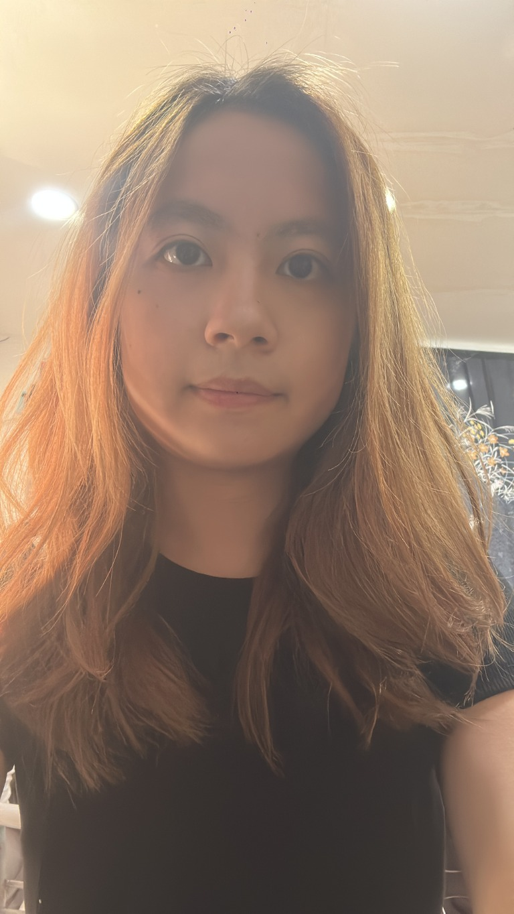

探索人體與健康
從不同角度認識身體，也思考健康和日常生活的連結。
BODY & WELLNESSA LITTLE INTRODUCTION
對人體、健康與中醫的智慧充滿好奇。對我來說，學習不只是課本上的知識，也是理解生活、認識自己與探索世界的方法。
保持好奇，慢慢把所學帶進生活。

01 — ABOUT ME
用好奇心認識中醫，
也用所學重新看見日常。
我目前是一名中醫系的大學生，對人體、健康與中醫的智慧充滿好奇。平常喜歡探索新事物，也享受在學習中發現不同觀點的過程。這個網站是記錄學習、分享生活與成長點滴的小天地。
看看我的學習紀錄02 — THINGS I LOVE
讓生活發光的，
往往是那些小小的喜歡。
從不同角度認識身體，也思考健康和日常生活的連結。
BODY & WELLNESS在傳統知識裡發現值得思考的觀點，理解它與生活的關係。
TRADITIONAL WISDOM保持好奇、嘗試新挑戰，也把學到的事慢慢用在生活裡。
LEARN & GROW03 — LITTLE MOMENTS
學習不只在課本裡，也在理解生活、認識自己和探索世界的過程中。
探索新事物，在學習過程裡發現新的想法。
把課本以外的問題帶進生活，從思考中認識世界。
期待把所學慢慢運用在生活與實際經驗中。
KEEP EXPLORING
希望透過文字與分享，留下每個階段的自己，也期待未來能持續探索更多有趣的可能。
看看我的學習紀錄